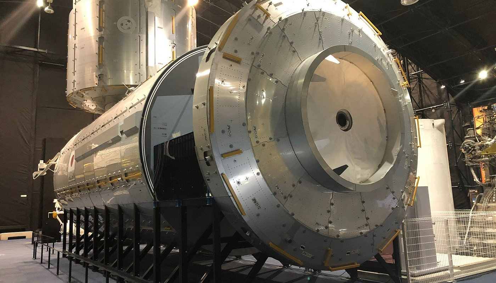
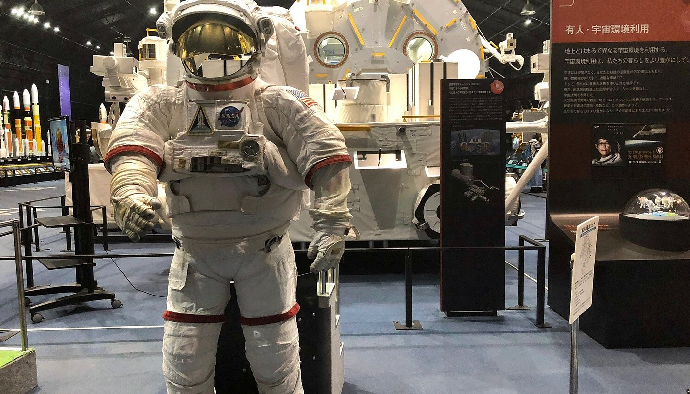
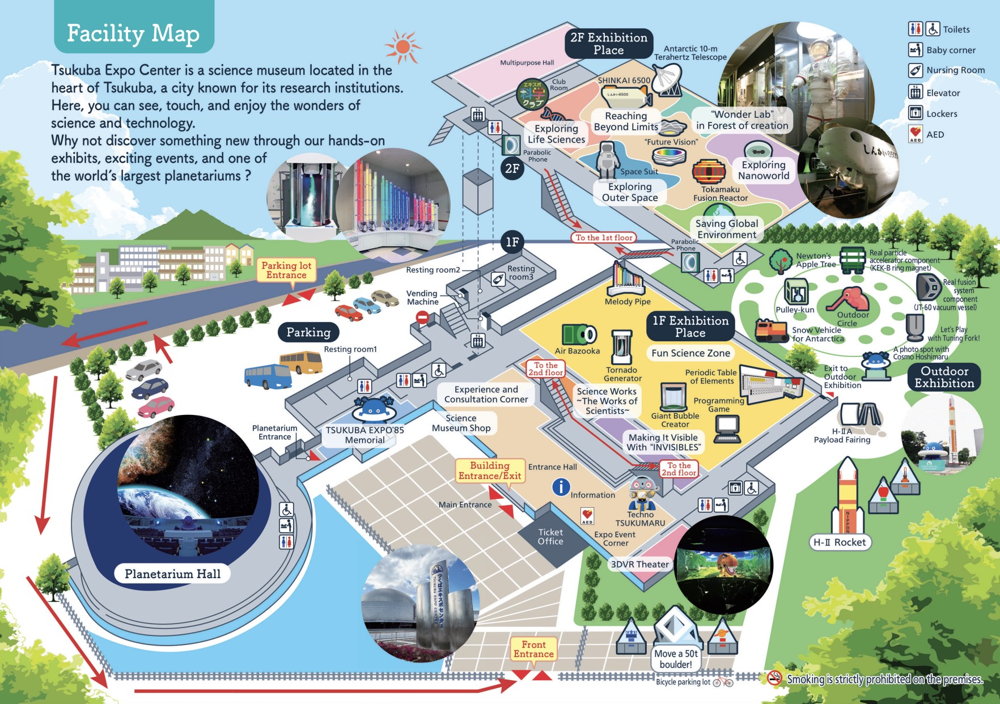
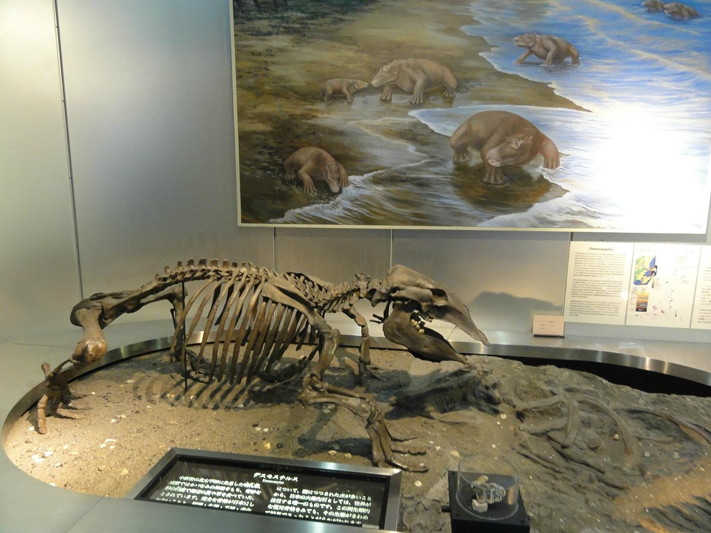
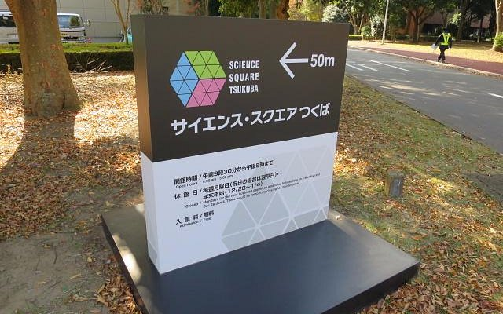
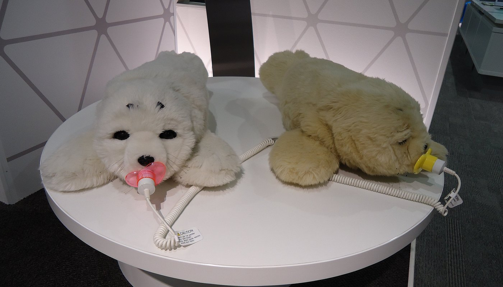

01. อวกาศ & วิทยาศาสตร์
ข้อมูลวิจัยเชิงยุทธศาสตร์ เวลาเปิด-ปิด ค่าเข้าชม อ้างอิงลิงก์ทางการ ภาพจาก Tripadvisor และวิธีเดินทางสำหรับสถานที่สำคัญใน Tsukuba Science City

1. JAXA Tsukuba Space Center (TKSC)
2-1-1 Sengen, Tsukuba-shi, Ibaraki 305-8505, Japan (พื้นที่ 530,000 ตร.ม.)
ลิงก์ทางการ: JAXA Official Site | จองทัวร์: visit-tsukuba.jaxa.jp

Space Dome: โซนจัดแสดงประวัติศาสตร์และนวัตกรรมอวกาศ JAXA Kibo ISS (ภาพถ่าย Tripadvisor)

Rocket Plaza: จรวด H-II ของจริงขนาด 50 เมตร (ภาพถ่าย Tripadvisor)
เวลาทำการ & วันหยุด
- เวลาทำการ: 9:30 - 17:00 น. (ร้าน Planet Cube ปิด 16:00/16:30 น.)
- วันปิดทำการ: ทุกวันจันทร์ และวันบำรุงรักษาอุปกรณ์
- ช่วงปีใหม่ (Year-end): ปิดทำการ 29 ธันวาคม - 3 มกราคม
- สถานะวันที่ 24-27 ธ.ค. เปิดทำการปกติทุกวัน
ค่าเข้าชม & ทัวร์นำชม (Guided Tour)
- ชมภายนอก Rocket Plaza / Space Dome: **ฟรี (Free Entry)**
- Guided Tour (70-75 นาที): ผู้ใหญ่ 500 เยน / เด็กและเยาวชนฟรี (รอบ 10:00, 11:30, 13:30, 15:00 น. ต้องจองล่วงหน้า)
จุดเด่นและสิ่งที่น่าสนใจ
- Rocket Plaza: จรวด H-II ของจริงขนาดความยาว 50 เมตร จัดแสดงกลางแจ้งหน้าอาคาร (จุดถ่ายรูปแนะนำ)
- Space Dome: โมเดลจำลองขนาดเท่าของจริงของ "Kibo" (Japanese Experiment Module บน ISS), ดาวเทียมสื่อสาร และเครื่องยนต์จรวด LE-7A / LE-5B
- Planet Cube (Museum Shop): ร้านขายของที่ระลึก อุปกรณ์อวกาศ และ **Space Food (อาหารอวกาศ)** ให้ลองชิม
วิธีเดินทาง (Kanto Railway Bus):
จาก Tsukuba Center Bus Terminal ชานชาลา 8 (Bay 8) นั่งรถบัสไป Arakawaoki Station ลงป้าย "JAXA Tsukuba Space Center" (ใช้เวลา 10 นาที อัตราค่าโดยสาร ~200 เยน รถออกทุก 15-20 นาที)
2. Tsukuba Expo Center
2-9 Azuma, Tsukuba-shi, Ibaraki 305-0031 (เดิน 5 นาทีจากสถานี Tsukuba ทางออก A2)
ลิงก์ทางการ: Tsukuba Expo Center English

แผนผังโซนจัดแสดงนิทรรศการวิทยาศาสตร์ Tsukuba Expo Center
เวลาทำการ & วันหยุด
- เวลาทำการ: 9:50 - 17:00 น. (เข้าชมรอบสุดท้าย 16:30 น.)
- วันปิดทำการ: ทุกวันจันทร์ / ปิดปีใหม่ **28 - 31 ธันวาคม**
- สถานะวันที่ 24-27 ธ.ค. เปิดทำการปกติ
ค่าเข้าชม
- บัตรเข้านิทรรศการ: ผู้ใหญ่ 600 เยน / เด็ก (4 ขวบ - ม.ปลาย) 300 เยน
- บัตรรวมท้องฟ้าจำลอง (Planetarium Set): ผู้ใหญ่ 1,000 เยน / เด็ก 500 เยน
จุดเด่นและงานไฟพิเศษ
- Planetarium (ท้องฟ้าจำลองยักษ์ 25.6m): หนึ่งในท้องฟ้าจำลองที่ใหญ่ที่สุดในโลก ฉายภาพระบบดาวความคมชัดสูง
- Tsukuba Expo Center Christmas Illumination: งานประดับไฟ LED รอบโดมท้องฟ้าจำลองริมน้ำ เปิดไฟ 16:00 – 21:00 น. (29 พ.ย. – 25 ธ.ค.)

3. Geological Museum (พิพิธภัณฑ์ธรณีวิทยา AIST)
1-1-1 Higashi, Tsukuba-shi, Ibaraki 305-0046 (อยู่ติดกับ Science Square AIST)
ลิงก์ทางการ: Geological Museum Official

จัดแสดงแร่ธาตุอัญมณี ฟอสซิล และโครงสร้างเปลือกโลก (ภาพถ่าย Tripadvisor)
เวลาทำการ & วันหยุด
- เวลาทำการ: 9:30 - 16:30 น. (เปิด อังคาร - อาทิตย์)
- วันปิดทำการ: ทุกวันจันทร์ (ปิดทำการช่วงปีใหม่)
- สถานะวันที่ 24-27 ธ.ค. เปิดทำการปกติทุกวัน
ค่าเข้าชม & จุดเด่น
- ค่าเข้าชม: **ฟรี (Free Entry)**
- จุดเด่น: นิทรรศการจัดแสดงแร่ธาตุประกายงาม ตัวอย่างหินอุกกาบาต ไดโนเสาร์ ฟอสซิลโบราณ และประวัติการเกิดแผ่นดินไหวในญี่ปุ่น

4. Science Square TSUKUBA (AIST)
1-1-1 Higashi Chuo Daiichi Honkan 1F, Tsukuba-shi, Ibaraki (ห่างจาก JAXA 500 เมตร)
ลิงก์ทางการ: AIST Science Square Official

จัดแสดงนวัตกรรมหุ่นยนต์ Paro และวัสดุศาสตร์อนาคต (ภาพถ่าย Tripadvisor)

โซนนิทรรศการกรีนเทคโนโลยีและพลังงานสะอาด (ภาพถ่าย Tripadvisor)
จุดเด่น
จัดแสดงหุ่นยนต์บำบัด "Paro" (หุ่นยนต์แมวน้ำที่โต้ตอบสัมผัสและเสียงได้) พร้อมนวัตกรรมพลังงานสะอาด กรีนเทคโนโลยี โซลาร์เซลล์รุ่นใหม่ และวัสดุศาสตร์แห่งอนาคต โดยมีร้านอาหารของศูนย์ AIST ด้านหลังอาคารให้บริการอาหารราคาย่อมเยาเปิดให้ผู้เข้าชมใช้บริการได้ด้วย